| Temps | Contenu | Objectif |
|---|---|---|
| 0-40 min | Les conditions de la fusion des roches sources | Assimiler les notions physiques et chimiques qui contrôlent la fusion des roches sources |
| 40-45 min | Questions générales | |
| 45-60 min | Pause | |
| 60-100 min | Les séries magmatiques issues des différents contextes géodynamiques | Relier les concepts de roches sources, de taux de fusion et de compositions géochimiques |
| 100-105 min | Questions générales |
Le manteau terrestre est hétérogène
L’hétérogénéité du manteau se traduit par l’existence de plusieurs pôles de composition chimique (DM, EM, HIMU) qui peuvent se mélanger (PREMA, FOZO).
Des roches sources différentes génèrent donc des magmas de compositions géochimiques différentes selon les contextes géodynamiques (OIB, MORB, IAB).
Comment ces roches sources fusionnent pour donner des liquides magmatiques ?
La fusion dépend de trois paramètres majeurs :
Une roche peut être très chaude (T) sans être fondue, à cause de sa composition réfractaire (X) et/ou de la pression (P).
Rappel sur le solidus et liquidus d’une roche
Diagramme de phase
Situation simplifiée où la composition de la roche source (X) peut être représentée sur un seul axe.
Un pôle de composition est plus appauvri ou réfractaire (température de fusion relativement élevée), tandis que l’autre est plus enrichi ou fertile (température de fusion relativement faible).
Exemple : une péridotite présentant des domaines fertiles et réfractaires selon le modèle du « marble cake ».
Le solidus et le liquidus peuvent être représentés par deux lignes qui se rejoignent sur les pôles purs.
La règle des leviers permet de déterminer les proportions de liquide et de solide à une température donnée.
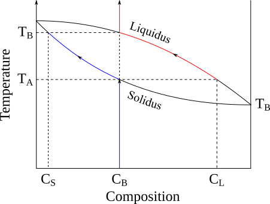
La pression influence le solidus et le liquidus d’une roche.
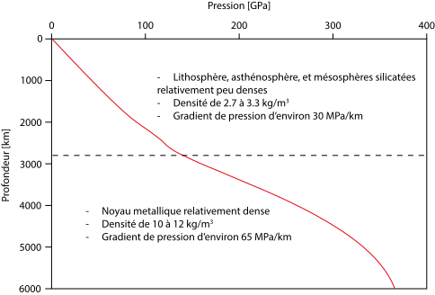
La chaleur interne de la Terre vient principalement de :
La chaleur primordiale héritée de l’accrétion, des impacts et de la différenciation (20 à 50 % de la chaleur totale).
La chaleur radiogénique (50 à 80 %) due à la radioactivité de certains éléments chimiques, notamment le K, l’U et le Th.
Les mécanismes de transfert de chaleur sont :
La conduction : transfert sans déplacement global de matière.
La convection : transfert par déplacement de matière.
L’advection : transport de chaleur associé au déplacement d’un fluide ou d’un matériau.
Évolution de la température en fonction de la profondeur
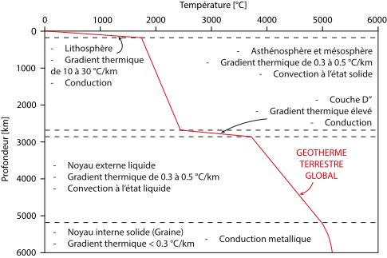
Une manière de représenter la fusion partielle est d’utiliser un diagramme P-T
Situation simplifiée où la température est représentée sur l’axe X et la pression sur l’axe Y.
Le géotherme et le solidus peuvent être représentés par deux lignes. Si le géotherme intersecte le solidus, une fusion partielle peut se produire.
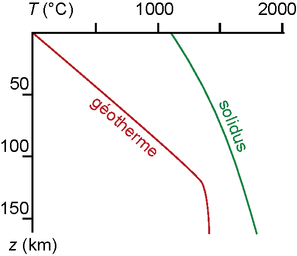
Le taux de fusion (F) est variable
Si F = 10 %, cela signifie que 100 kg de roche source produisent environ 10 kg de liquide et 90 kg de résidu solide.
Représentation schématique d’un géotherme typique sans fusion partielle
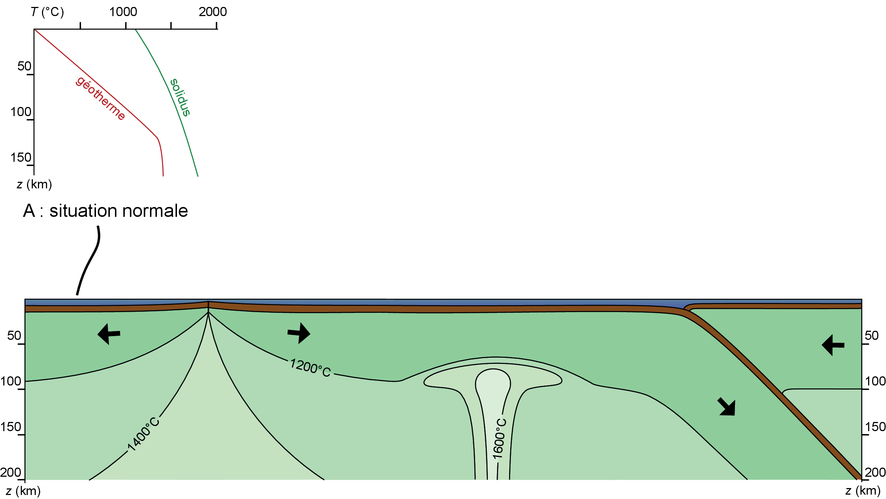
Mécanisme
La fusion par décompression adiabatique se produit lorsqu’une roche chaude remonte plus vite qu’elle ne refroidit.
Ce processus est typique des dorsales médio-océaniques et des rifts continentaux car ce sont les endroits où la lithosphère est amincie et où le manteau asthénosphérique peut remonter.
La remontée suit une trajectoire quasi adiabatique dans le diagramme pression–température et peut intersecter le solidus.
Représentation
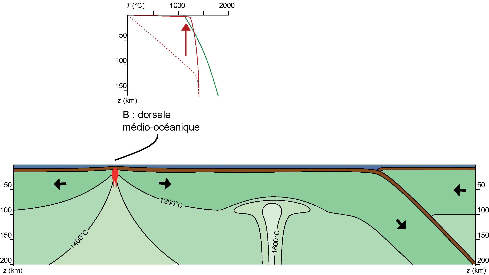
Ce qui se passe
Mécanisme
La fusion par réchauffement isobare se produit lorsqu’une roche se réchauffe sans décompression importante.
Ce processus est typique des points chauds mantelliques, où le manteau asthénosphérique présente une anomalie thermique ascendante liée aux mouvements convectifs du manteau.
Le géotherme est donc déplacé vers les températures élevées et peut intersecter le solidus.
Représentation
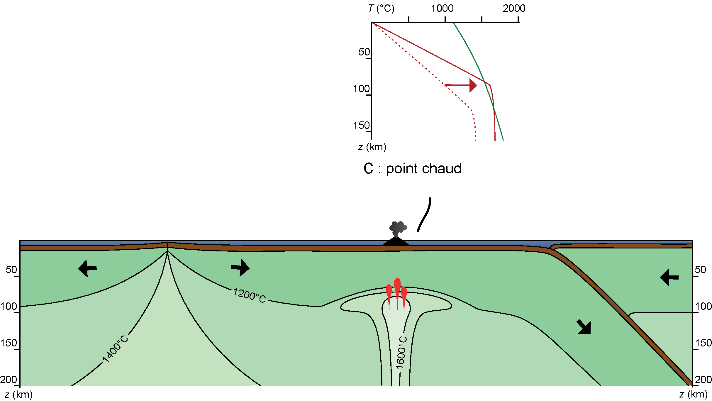
Ce qui se passe
Mécanisme
La fusion par changement de composition se produit lorsque la composition de la roche source est modifiée par un apport important de fluides, sans variation majeure de la pression et de la température.
Ce processus est typique des zones de subduction, où les plaques océaniques plongeantes se déshydratent au cours de leur descente dans le manteau. Les fluides libérés, majoritairement constitués de H₂O, se mélangent au coin de manteau sus-jacent et modifient la composition des roches sources.
Le géotherme n’est donc pas nécessairement modifié. En revanche, l’apport de fluides abaisse le solidus de la roche source, qui peut alors intersecter le géotherme.
Représentation
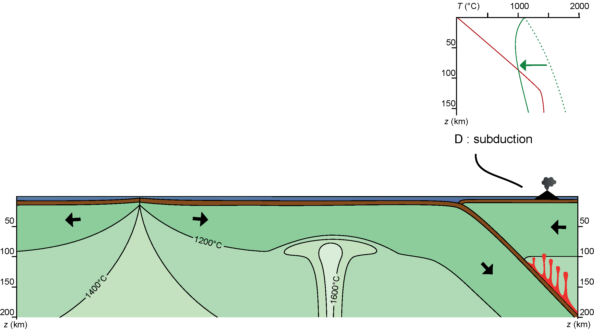
Ce qui se passe
Mécanisme
L’anatexie désigne la fusion partielle de roches crustales, notamment de la croûte continentale.
Lors des collisions continentales, la croûte peut s’épaissir fortement et ses niveaux profonds peuvent être enfouis à des pressions et des températures suffisantes pour atteindre les conditions de fusion.
L’enfouissement modifie les conditions de pression et de température, tandis que le métamorphisme transforme les minéraux et peut introduire ou libérer des fluides. La combinaison de ces effets abaisse le solidus de certaines roches crustales et permet leur fusion partielle.
Ce qui se passe
Une série magmatique est un ensemble de magmas et de roches présentant une évolution chimique cohérente à partir d’une ou plusieurs compositions parentales.
La source contrôle la signature initiale
Le taux de fusion contrôle le liquide extrait
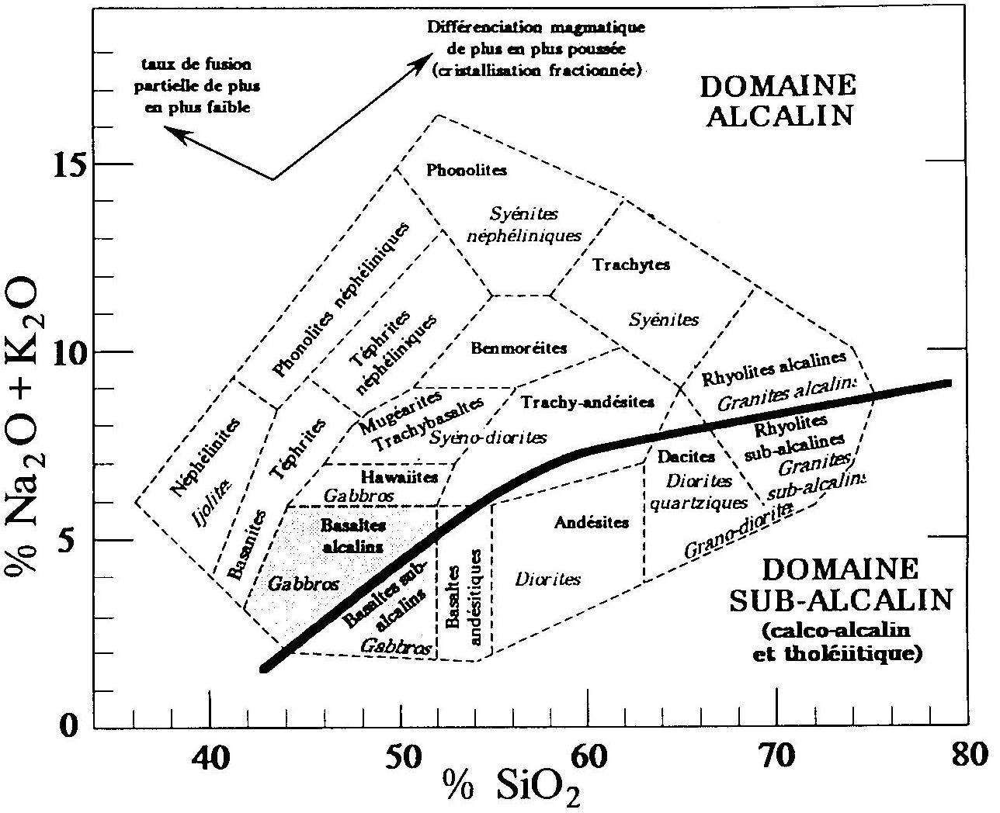
Lire les séries sur un diagramme TAS
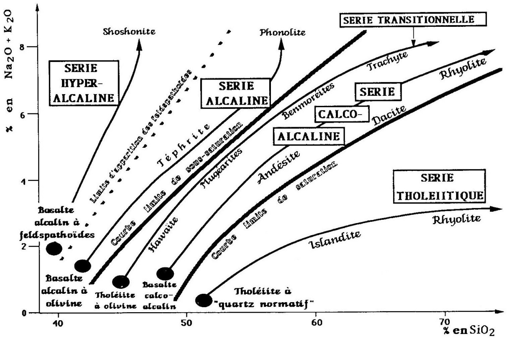
Lire les séries sur un diagramme TAS
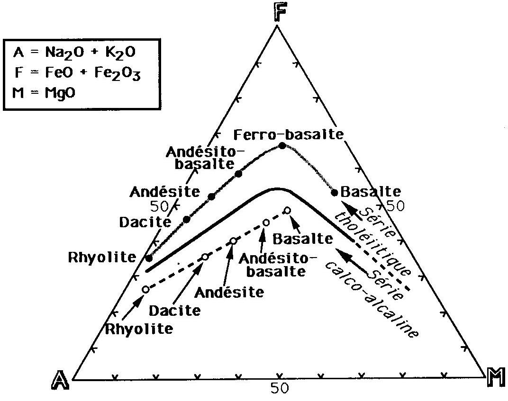
Lire un diagramme AFM
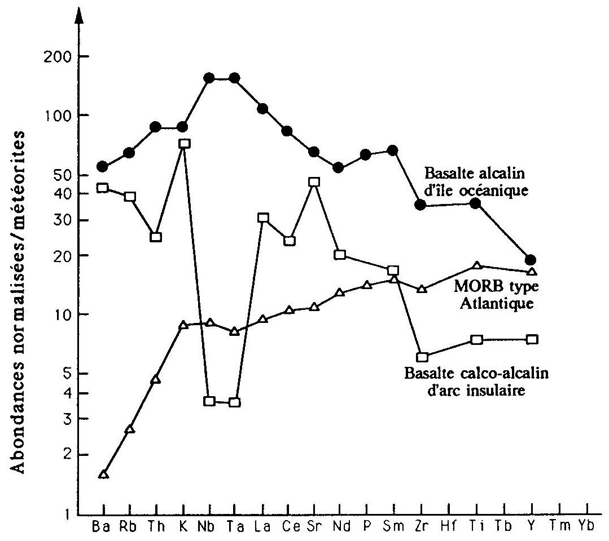
Lire un diagramme multiélément
Le liquide produit par fusion partielle n’est pas encore une roche finale.